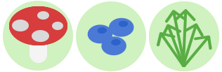

Our game
Our initial idea was to develop a game inspired by Pokemon Go, with the aim of engaging the younger generation in foraging wild foods. However, their limited attention spans presented a hurdle. To overcome this challenge, we decided to gamify the experience to capture their interest and encourage active participation. In our envisioned game, akin to Pokemon Go, children would explore the outdoors, actively foraging while earning XP and building an inventory on their phones. Utilizing this game format, participants can locate forageable items in real-time, displayed based on their GPS location. Each discovery rewards them with points and provides educational information about the plant. Despite the wealth of information available on Vildmad.dk, youth engagement remains low. To address this issue, we propose a game where children can venture into urban areas to collect wild foods, starting with the city. This concept has the potential for expansion to other regions, leveraging the extensive data already available on Vildmad.dk.
